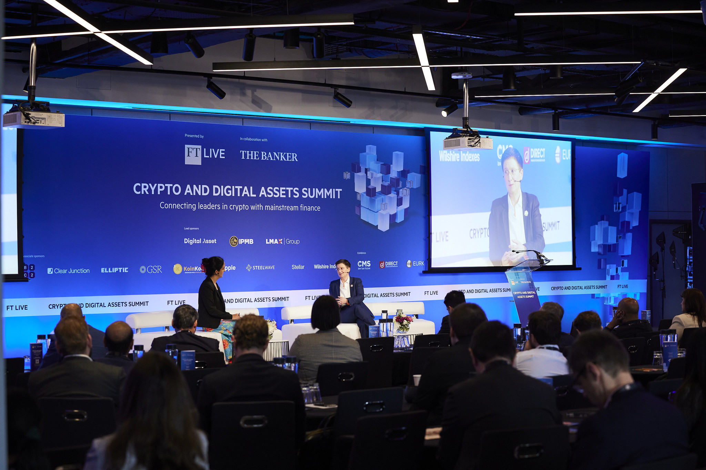
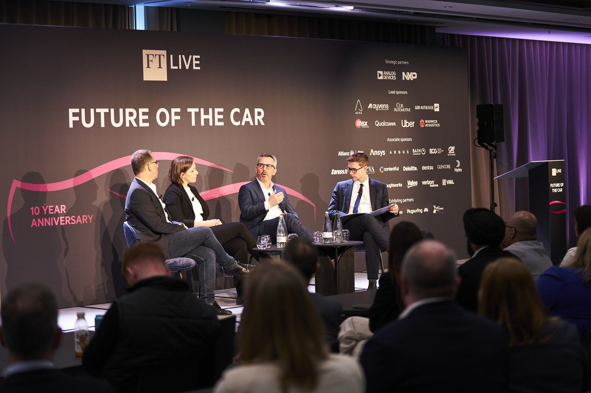

Financial Times · Event Design & Motion · 2022 – 2024
Financial Times
Live & Events
Overview
A collection of high-profile projects for Financial Times Live, spanning two years and covering everything from large-scale stage design to digital marketing campaigns and an AR prototype. Working across the full breadth of the FT brand — from the gravitas of their flagship live events to the high-energy digital presence of TNW Conference.

FT Live — Events & Stage Design
High-profile corporate event projects spanning stage design, digital environments and multi-channel marketing campaigns. The work encompasses large-scale LED stage installations, on-site wayfinding and signage, social media graphics, web banners, and online advertising — all crafted within strict FT brand guidelines.
Also included compelling Financial Times print advertisements and brochures for distribution in the newspaper itself.




TNW Conference 2024
Comprehensive paid media marketing strategy and visual design for TNW Conference 2024 in Amsterdam. Produced a series of engaging social media videos and stills tailored to the conference's brand and audience. Designed static assets to enhance the conference website, and created a suite of promotional materials to drive registration and attendance.
The work demanded both motion and graphic design fluency to deliver a cohesive, high-energy presence across channels.
FTWeekend Festival — AR
Prototype AR experience developed for the FT Weekend Festival, built using Lens Studio and Snap AR. Four dynamic lenses were designed for seamless Snapchat integration, each serving a distinct festival purpose:
- Live AR Schedule lens — real-time event updates
- Interactive print ads — brought static FT materials to life
- 3D Event Site Map lens — intuitive festival navigation
- Filters lens — personalised festival moments
Credit
Client: Financial Times Live / TNW. Work produced in-house as Designer at Financial Times Live, Sept 2022 – May 2024.